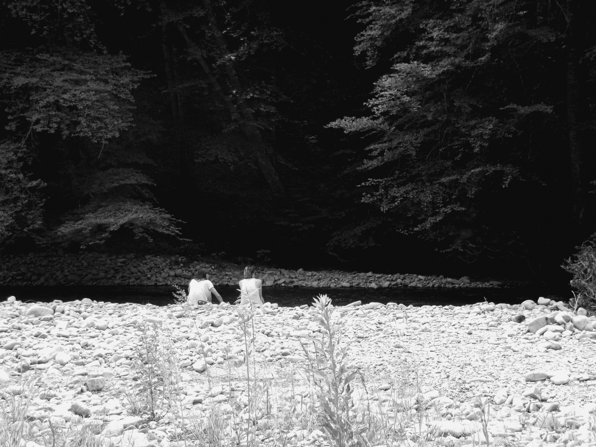

On trouve sur cette magnifique page une sélection de mes projets
que j'ai fait en école ou personnels :)
graphisme
illustration
photographie
vidéo
Dans le silence ouaté du premier jour, la terre respire à
peine. Le brouillard s'étire comme un drap sur les épaules du
monde, et dans cette lumière d’or pâle, tout semble figé… ou
en attente. Une tour se dresse, sentinelle muette, veillant
sur les songes éteints de la nuit.
Dans un lieu familier, l’eau dessine des cercles, les
feuillages frémissent, et un oiseau traverse le ciel. Une
parenthèse sensible, où chaque détail raconte la beauté
discrète du quotidien.

Une île flotte, solitaire, dans l’immensité blanche — dernier
écho d’un monde qui s’efface. Autour, des corps tombent en
silence, comme des pensées oubliées dans un rêve numérique. Un
paysage suspendu, fragile vertige inspiré des murmures d’OK
Computer.
Dans la fraîcheur matinale de Château-d’Œx, les toiles
multicolores s’éveillent lentement sous les mains des
aérostiers. Entre lumière rasante et gestes précis, la terre
prépare le ciel à accueillir ses géants silencieux.
Dans une ambiance feutrée de salle de bain désuète, une jeune
femme au regard voilé s'accorde une pause solitaire. Entre
fumée de cigarette et silence carrelé, la scène capture un
moment d'introspection brute, presque cinématographique.
L'illustration mêle tension douce et esthétique rétro, où
chaque détail, du paquet de cigarettes à la posture
nonchalante, raconte une histoire suspendue dans le
temps..